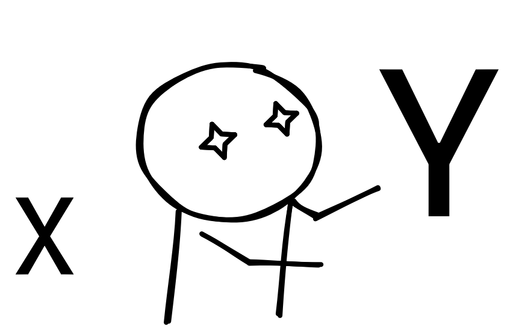

- Date
X does not work and I must use Y

So you’re working on something that you usually don’t work on, out of your field but you’re going to learn something new. So you dive in. Your entire application has been written over years and is messy and unbearable to look at, so bad you did not let the clean code guy near it in fear of them having a heart attack.
A team call, everybody joins and the manager talks about how our application is unable to scale to meet the requirements. As soon as the requests start flooding in you see the constant stream of 504 Gateway timeouts and you wonder, Why?
Now there are two approaches here. let me take you to the wrong one first (In my objective opinion).
X does not work and I must use Y
So, you think maybe your Nginx server is having issues serving requests, and you scour the internet for a solution you implement multiple solutions suggested to you with no luck, and now the server is handling even handling fewer requests than it did before.
You and the team find yourself stuck and then someone in the team says maybe X is just not capable of handling the requests. They saw big tech use Y in their tech stack. what if we use Y or Y before it? and more variations of this sentence. So begins the journey of throwing in solutions of fancy things that helped big tech scale. But all of you are new to those solutions and still keep having issues with performance. After all this, you keep wondering how others are scaling up easily and you’re stuck in here with the same tech as them.
Also why all the alternatives to Y are like Y but smaller, Y but written in rust, and best one Y with functional syntax.
The “better approach”
You were not wrong in the beginning you tried to think about where the problem might lie in the system. But you did not do one thing you should have started profiling your application while doing the performance testing. The problem in X does not work and I must use Y you failed to get to the core of the problem. You’d probably find sever failing to handle so many requests even despite hardware being more than capable enough was your application was having some tuning issues. Maybe there was a line of code that was performing blocking IOs or regex that was too clever (a personal story for some other day), or too much memory was being created too fast so GC keeps kicking in, etc. Using the results you finally fixed the issues and now the server is having no issues scaling to more requests.
I’m not saying you might never need Y, there is a reason it’s made and its being used. But once you need Y you will find you understanding why you need Y and not I think Y will solve my problem because I think so.
The above example I gave was around ~performance but there are more areas in which this can apply. The example could be you’re doing a rewrite of part of the applications so you end up using something completely new because it’s what is the trend. I’m looking at everyone who completely left server rendering because SPA where all the buzz. Or you heard this new js framework is blazingly faster than the one you’re using, so must rewrite your entire application in it. So many scenarios where people completely switch parts or entire tech stacks without taking time to give thought to their core problems.
I’m not blaming anyone because I’ve done this so many times and I unconsciously do this even today. But now from next time if you’re just deciding to just throw Y at something consider taking in time to understand why is X failing for you.